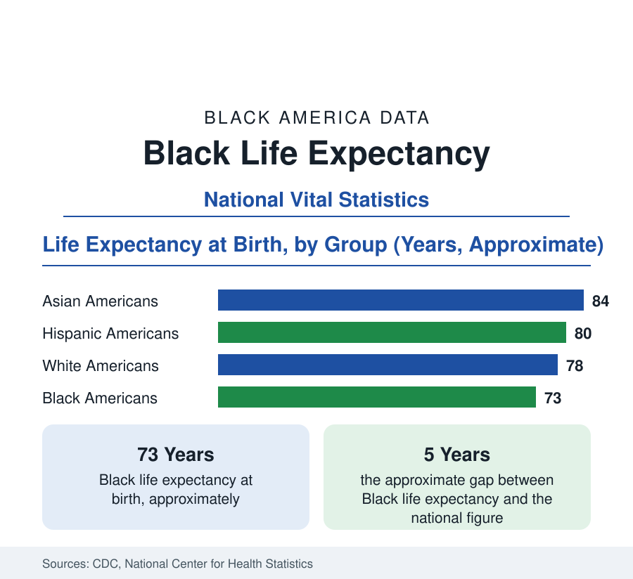

Black Public Health
Black Life Expectancy: The Gap at Birth and Its Causes
Black life expectancy at birth is about 73 years, roughly five years below the national figure — the summary measure of every health gap in this section. The CDC data.

Life expectancy at birth is the statistic into which all of a population's mortality data is compressed: the average years a newborn would live if death rates at every age stayed as they are. For Black Americans, the National Center for Health Statistics places the figure at about 73 years — roughly five years below the national level of about 78, and below the figures for White Americans at about 78, Hispanic Americans at about 80, and Asian Americans at about 84. This article explains the measure, the composition of the gap, and its movement over time, including the sharp pandemic-era decline and partial recovery.
How the Figure Is Built
Life expectancy is not a prediction about any individual; it is an arithmetic summary of a population's death rates in a given period, built from death certificates and census population counts in the National Vital Statistics System. Its virtues are that it is age-adjusted by construction and comparable across populations and eras. Its limits matter for interpretation: a period figure assumes today's rates persist across a lifetime, so it moves sharply when mortality spikes — as it did for every American group during the COVID-19 pandemic — and recovers when the spike passes. The related measure, life expectancy at age 65, governs retirement-age questions and shows a considerably narrower racial gap than the at-birth figure, because much of the at-birth gap is produced by deaths in childhood, youth, and middle age.
Where the Five Years Are Lost
Decompositions of the gap published by federal statisticians assign its largest shares to the chronic conditions that anchor this section. Heart disease is the leading contributor, followed by cancer — where Black mortality exceeds White mortality overall despite lower incidence of some major cancers — then diabetes, stroke, and kidney disease, the hypertension-diabetes cluster whose prevalence data appear throughout this section. Infant and perinatal mortality contributes materially: Black infants die in their first year at more than twice the White rate, and each infant death removes a full statistical lifetime from the average. External causes and infectious disease, including the pandemic years' toll, account for most of the remainder, with the exact shares shifting by year.
The Pandemic Shock and Recovery
The COVID-19 pandemic produced the largest short-run movement in the modern life-expectancy series. Black life expectancy fell by roughly three years across the pandemic's first two years — a larger decline than the national average, reflecting higher exposure through frontline employment, higher prevalence of the chronic conditions that made infection deadly, and higher mortality at nearly every age. As pandemic mortality receded, Black life expectancy rebounded by more than a year in the first full recovery year of the series, the largest single-year gain of any group, while remaining below its pre-pandemic level. The episode is the clearest demonstration in the data of the measure's nature: it is a mirror of current mortality conditions, not a fixed property of a population.
Gender and Geography
Within the Black population, the gender gap in life expectancy runs at roughly six years — Black women at about 76 to 77 years, Black men at about 70 to 71 — wider than the national gender gap, and produced largely by higher male mortality in young and middle adulthood. Geography compounds it: Black life expectancy varies by several years between states, tracking the state-level patterns of the chronic-disease data — highest in states with strong health-system access and lowest across parts of the Deep South — a distribution the state health profiles in this reference document.
The Long View
Across the long series, the direction is improvement with incomplete convergence. Black life expectancy has risen by more than a decade since the middle of the twentieth century, and the Black–White gap has narrowed substantially from its widest recorded levels — gains driven principally by declines in cardiovascular mortality, the same force that lifted all American longevity in that era. The narrowing has been uneven, stalling in periods when causes concentrated among the young — and, in the 1980s and 1990s and again in the overdose era, rising — offset the chronic-disease gains. The articles of this section, on hypertension, diabetes, cancer, maternal and infant health, and access to care, are in effect a decomposition of this single number, and their data are the agenda by which the remaining five years would be recovered.
The summary: about 73 years against a national 78 — a five-year gap built mostly from heart disease, cancer, diabetes, and infant mortality, sharply widened and partly healed within the pandemic years, and narrowed over the long run by the cardiovascular progress that defines modern American longevity. It is the one figure in this reference that summarizes all the others.
More in Black Public Health
Hypertension Among Black Adults: Prevalence, Control, and Consequences
About 55 percent of Black adults have hypertension — the highest rate of any U.S. group. Prevalence, onset, control, and the stroke, heart, and kidney consequences in the data.
Diabetes Among Black Adults: Prevalence and Complications
Nearly one in five Black adults has diabetes, diagnosed or undiagnosed — and its complications fall with particular weight. The CDC data on prevalence, control, and outcomes.
Health Insurance Coverage Among Black Americans
About one in ten Black Americans is uninsured. Employer plans cover about half, and Medicaid covers roughly one in five — the coverage data behind every health statistic on this site.
Source: CDC, National Center for Health Statistics, National Vital Statistics System; CDC life tables.